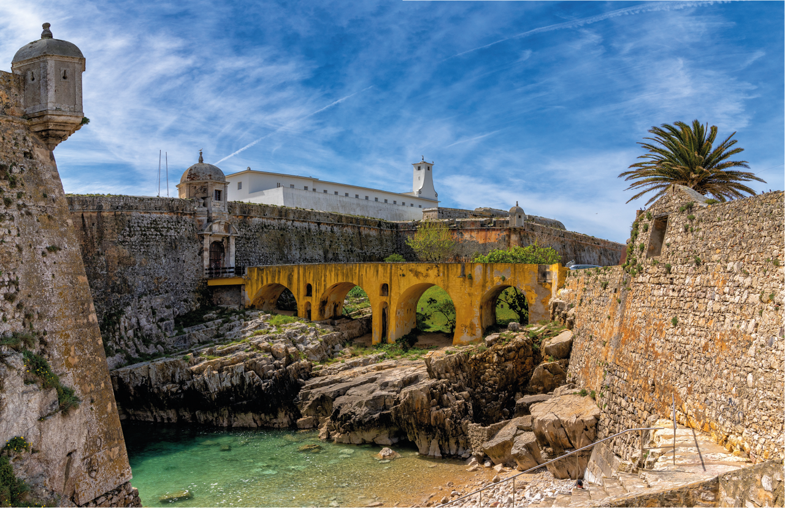
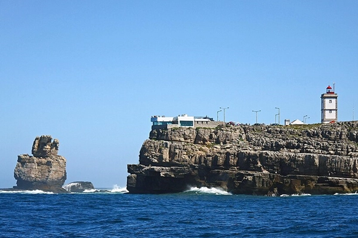
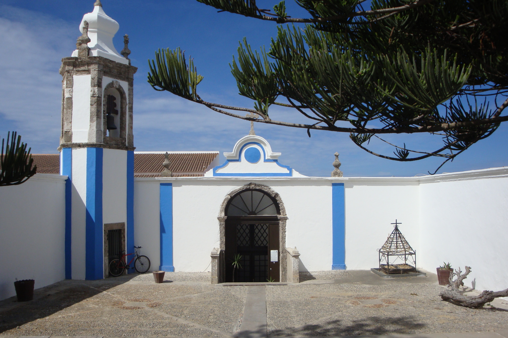
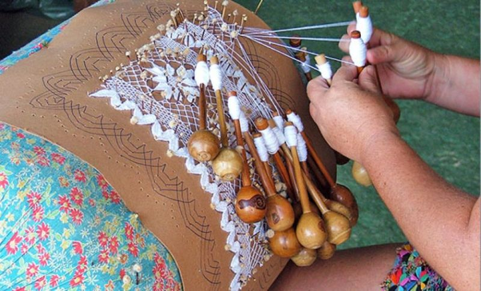

Monumentos e tesouros que contam a nossa identidade.

Construída no século XVI, foi uma importante praça-forte militar e, mais tarde, prisão política. Hoje abriga o Museu Nacional da Resistência e Liberdade.

Situado no extremo ocidental da península, oferece uma vista deslumbrante sobre as Berlengas e a icónica formação rochosa da "Nau dos Corvos".

Um local de grande devoção popular, famoso pelos seus azulejos setecentistas e pela sua localização privilegiada junto ao mar.

O património imaterial mais precioso de Peniche. Uma arte secular passada de geração em geração pelas mãos das nossas rendeiras.